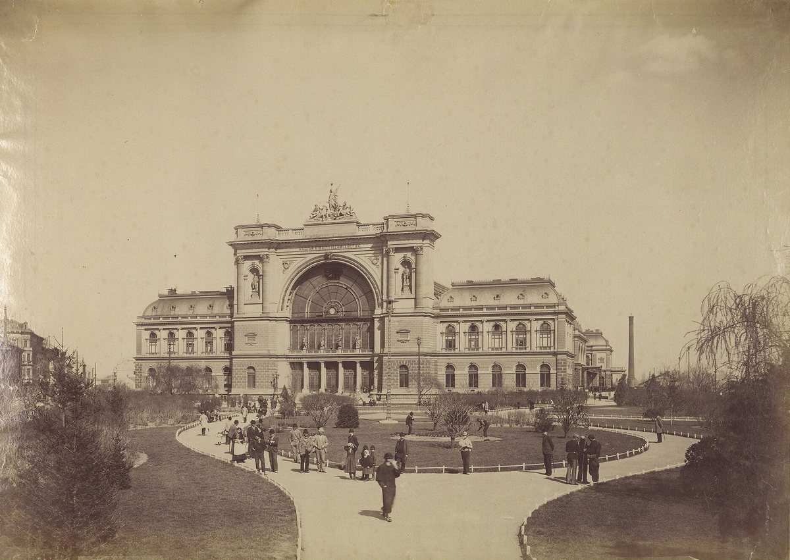

Mszana Dolna 堂区 · 1892–1916年 · 取材于邻近堂区登记簿的新故事
去佩斯，去芝加哥
在邻近的 Mszana Dolna 堂区1890–1916年的登记簿里，近七十条记录指向远离家乡的地方：先是布达佩斯，后是芝加哥。
在 Claude 的协助下译自波兰语原文。登记簿引文保留原文，并附译文。
这个故事走出了 Dobra 堂区，来到邻居那里。Dobra 堂区以西是 Mszana Dolna 堂区。在它的登记簿里，Mszana Dolna、Mszana Górna、Kasinka Mała、Łętowe、Słomka、Glisne，以及 Łostówka 不属于 Dobra 的那一部分，各有自己的分册。这些登记簿1890–1916年的年度副本保存了下来，也就是本堂神父每年年终誊抄的副本。2026年11月，它们已全部释读完毕：近1.5万条洗礼、婚姻和葬礼记录。
这些登记簿是在寻找我父亲那边的家族时释读的。这些登记簿里有 Mszana Górna 的 Węglarz 一家，也就是我曾祖母的家族。父亲家里还流传着两个说法：祖先早年是从匈牙利来的；大洋彼岸还有几位姑妈。在 Mszana 的登记簿里，匈牙利和美国每隔几页就会出现一次。近七十条记录通向远离家乡的地方：约五十条通向匈牙利，十二条通向美国，还有几条通向俄斯特拉发、西里西亚和普鲁士。
死于布达佩斯
1892年至1911年间，死亡登记簿中记入了十九名死在匈牙利的本堂区男子，其中十六人死在布达佩斯。本堂神父并没有为他们下葬。只有当匈牙利寄来死亡证明、Limanowa 县公署下令登记时，他才把他们补记进去。这类记录通常既没有编号，也没有神父的签名，备注栏里写的是公文的编号。
第一位是 Mszana Dolna 的磨坊工 Jan Łabuz。他33岁，有妻子。1892年9月30日，他在布达佩斯溺水身亡。Kasinka Mała 的 Józef Bolisęga 是个已婚的工人，1894年5月从高处坠落身亡，终年28岁。布达佩斯寄来的公文日期是1895年1月27日，那已是他死后八个月。
摘自 Kasinka Mała 死亡登记簿，1895年副本中一条没有编号的记录
Maji 1894 · 8 · Bolisęga Josephus uxoratus operarius · 28 · ex alto cecidit · Budapestini 27/1 1895 N° 330.
1894年5月8日。Józef Bolisęga，已婚，工人，28岁。从高处坠落。布达佩斯1895年1月27日[公文]，第330号。
Mszana Dolna 死亡登记簿年度副本 1890–1912 · 档号 2582/5500，1895年 · 扫描件 003 · 查看扫描件 ↗
Łostówka 的雇工 Franciszek Krawczyk 于1895年5月在布达佩斯被杀，终年39岁。Kasinka Mała 的 Andrzej Kraska 于1899年3月溺亡；死因神父是用波兰语写的：“utonął”（溺死）。Mszana Dolna 的 Walenty Szczypka 于1898年8月在圣伊什特万医院死于痨病，并葬在那里。1907年，Kasinka Mała 的 Antoni Kołodziejski 也死在这家医院；1906年，同样来自 Kasinka 的 Józef Mucha 死在圣罗克医院。
这十九人中最年轻的17岁，大多数在二十几岁到四十岁之间。其中十人来自 Kasinka Mała。
其中有 Mszana Górna 的 Maciej Węglarz，Józef 和 Katarzyna 的儿子。他于1894年12月22日去世，终年27岁。死亡证明是1895年2月在布达佩斯开具的。他和我的曾祖母同姓。他是不是她的亲戚，我不知道。
Kőbánya，即“采石场”
他们在那里做什么？神父们记得很简短：工人、雇工，有一次是磨坊工。更多的情况来自报纸和历史学家的著作。19世纪70年代末，迅速发展的布达佩斯开始吸引加利西亚（当时奥地利统治下的波兰南部地区）的穷人。波兰人在砖厂、磨坊、制革厂和水泥厂做工，在建筑工地上干活，参与多瑙河的整治工程。“一个移民会带走十几个同乡”，《Kurjer Lwowski》（《利沃夫信使报》）1898年这样写道。定居下来的波兰人大多住在布达佩斯第十区 Kőbánya。这个名字的意思就是“采石场”。
从1897年起，Kőbánya 开始为波兰工人举行弥撒。1908年，一位常驻的司牧神父来到他们中间：利沃夫总教区的 Wincenty Danek 神父。两年后，他向美国的同胞求助。他在《Dziennik Chicagoski》（《芝加哥日报》）上写道，布达佩斯约有1.5万名波兰人，“大多是工人，靠双手劳动为生”。
Mszana 的记录与这幅图景相吻合：一个磨坊工，一个从高处坠落的工人，两个溺水的男人。况且，从 Mszana 到布达佩斯，比想象的要近。从1884年12月起，铁路就从这里经过（参见故事《铁路与蒸汽锯》），并在 Nowy Sącz 与一条经 Muszyna 通往匈牙利的线路相连。

Kőrösmező 的霍乱
Łostówka 的 Jakub Krawczyk 死在离布达佩斯很远的地方，终年28岁。1893年8月8日，他在 Kőrösmező 死于霍乱。那就是今天乌克兰外喀尔巴阡地区的 Jasinia，当时是紧挨着加利西亚边界的一个匈牙利村庄。
1893–1894年，那里正在修建一条深入喀尔巴阡山区的铁路。从四面八方招来的工人挤住在集体工棚里，1893年，他们中间爆发了霍乱。这条线路的建设者中有230人死亡。附近的村子不许把他们葬在自己的墓地里，铁路方面只好买地另建墓地。回家的人要经过医生检查，并用单独的车厢运送。开往布达佩斯的车厢在 Kőbánya 被摘下。
登记簿并没有说 Jakub 参加了这项工程。但地点、年份和疾病都对得上。他的死讯直到1895年4月才传到 Mszana，已是二十个月之后。
生在布达佩斯
去匈牙利的不只是男人。1894–1912年的死亡登记簿里有二十一个孩子和年轻人，神父在他们旁边补注：生于布达佩斯。父母带着他们回到村里，又在这里把他们安葬。
Angela Niedośpiał 于1901年4月死在 Mszana Dolna。她只有3周大，却生在布达佩斯，可见母亲是带着新生儿上路的。同一个月，生于布达佩斯的9岁男孩 Jan Kęskowicz 在 Mszana Górna 溺水身亡。
Kasinka Mała 的 Jan Karpierz 于1902年9月29日去世，时年6岁。神父详细记下了这个男孩的来历。
摘自 Kasinka Mała 死亡登记簿，1902年
Joannes Karpierz filius Casimiri et Annae Wróbel natus in Budapest die 24 maji 1896 et ibidem baptizatus et inscriptus in Köbanya
Jan Karpierz，Kazimierz 与 Anna（娘家姓 Wróbel）之子，1896年5月24日生于布达佩斯，在当地受洗，并登记在 Kőbánya 的登记簿中。
Mszana Dolna 死亡登记簿年度副本 1890–1912 · 档号 2582/5500，1902年 · 扫描件 005 · 查看扫描件 ↗
夺走这个男孩生命的是“sipek”，也就是白喉（参见故事《“Sipka”一词》）。十一天后，他2岁半的弟弟 Józef 也死于同一种病。
婚姻登记簿里也能看到布达佩斯。1902–1913年间，有五位新娘生于布达佩斯。Łostówka 的 Katarzyna Knapczyk 在1902年2月时21岁，所以她约生于1881年。可见她的父母早在19世纪80年代初就到了布达佩斯，那时加利西亚的移民潮刚刚开始涌向那里。Kasinka Mała 的 Anna Mucha 于1891年3月生于布达佩斯。她于1907年2月出嫁，当时还不满16岁；结婚许可是 Mszana Dolna 的法院批准的。
在这二十一个生于布达佩斯的孩子中，有六个被神父记为非婚生子女，几乎每三个就有一个。而在堂区受洗的全部孩子中，非婚生的大约每十六个才有一个。Danek 神父从布达佩斯报告说，那里有许多同胞不结婚就生活在一起，他自己就为这样的伴侣主持过婚礼。
况且，在匈牙利结婚的方式和加利西亚不同。从1895年10月1日起，那里只有在官员面前缔结的婚姻才有效。1896年夏天，堂区有两对新人就这样在布达佩斯结了婚。7月27日，Kasinka Mała 的 Cecylia Łacna 嫁给了生于 Siary 的 Andrzej Białobok。8月23日，Łostówka 的 Stefan Dziedzina 娶了 Franciszka Kotarba。本堂神父把这两场婚礼抄进了 Mszana 的登记簿。记录中没有证婚人，也没有神父，却有一句德语。
摘自 Łostówka 婚姻登记簿，1896年8月23日婚礼记录旁的补注
In Budapest durch den Standesbeamten getraut
在布达佩斯由民事登记官主持结婚。
Mszana Dolna 婚姻登记簿年度副本 1890–1916 · 档号 2582/4500，1897年 · 扫描件 006 · 查看扫描件 ↗
“Zabřech (Hungaria)”
“Hungaria”（匈牙利）这个词在 Mszana 的登记簿里出现得太频繁，以至于有一次神父顺手就写了上去。1902年8月，生于 Dębno、在 Witkowice 做工的 Stanisław Pach 在 Mszana Dolna 结婚。他娶了234号房屋20岁的 Wiktoria Strzelec。Witkowice 是摩拉维亚境内、俄斯特拉发附近的一座大钢铁厂。
Pach 夫妇的长子 Władysław 于1903年12月死于“in Zabrechu u Svinova”（在 Svinov 附近的 Zábřeh），只有半岁。次子 Bolesław 于1906年10月出生在 Mszana 母亲的娘家，三个半月后夭折。
摘自 Mszana Dolna 洗礼登记簿，1906年11月4日洗礼记录旁的补注
Boleslaus · + 8/2 907 in Zabřech (Hungaria)
Bolesław。1907年2月8日死于 Zábřeh（匈牙利）。
Mszana Dolna 洗礼登记簿年度副本 1901–1911 · 档号 2582/3505，1906年 · 扫描件 006 · 查看扫描件 ↗
然而 Zábřeh 并不在匈牙利。它是紧挨着 Witkowice 钢铁厂的一个村子，今天是俄斯特拉发的一个城区。
在 Mszana，通向俄斯特拉发和西里西亚的记录只有几条。Kasinka Mała 的矿工 Sebastian Grzesiak 于1893年3月在 Karwina 附近的 Orłowa 死于伤寒，终年26岁。Dobra 堂区的情况恰恰相反：那里最多的补记正是通向俄斯特拉发（参见故事《去俄斯特拉发，去大洋彼岸》）。
去芝加哥
美国的第一个踪迹，与布达佩斯出现在同一条记录里。1894年7月，2岁半的 Marianna Cieślak 在 Mszana Dolna 去世。
摘自 Mszana Dolna 死亡登记簿，1894年7月23日
Marianna f. Jacobi Cieślak degentis in America et Magdalenae Luberda nata in Budapest
Marianna，旅居美国的 Jakub Cieślak 与 Magdalena（娘家姓 Luberda）之女，生于布达佩斯。
Mszana Dolna 死亡登记簿年度副本 1890–1912 · 档号 2582/5500，1894年 · 扫描件 002 · 查看扫描件 ↗
小女孩生在布达佩斯，父亲又走得更远，去了大洋彼岸，母亲则带着孩子回到了 Mszana。
此后十几年，登记簿里再没有出现美国。直到1907年它才再次出现，此后越来越频繁。
| 年份 | 匈牙利 | 美国 |
|---|---|---|
| 1890–1894 | 8 | 1 |
| 1895–1899 | 11 | 0 |
| 1900–1904 | 15 | 0 |
| 1905–1909 | 7 | 3 |
| 1910–1916 | 8 | 8 |
表中是 Mszana Dolna 堂区登记簿里的记录，按登记年份统计。匈牙利一栏：死在匈牙利的人、生于布达佩斯的人以及在那里举行的婚礼。美国一栏：在大洋彼岸的洗礼、婚礼和死亡。洗礼登记簿释读到1911年，死亡登记簿到1912年，婚姻登记簿到1916年；而从1910年起，副本中缺少 Kasinka Mała。所以最后一行的数字偏低。
出现最多的是芝加哥，尤其是那里的波兰人圣卡西米尔堂区。1907年，Słomka 的一个男孩作为非婚生子受洗；后来有人用另一种墨水在他的记录旁补写了父亲的名字和“copul. Chicago par. S. Casimiri 10.X.1909”（1909年10月10日在芝加哥圣卡西米尔堂区结婚）。可见父母在芝加哥结了婚，孩子也就成了婚生子。Łętowe 的 Józef Gajda 和妻子 Franciszka 也是在圣卡西米尔堂结的婚。他们后来回来了，1911年12月让女儿 Wiktoria 在 Mszana 受洗。
有两个孩子虽然在芝加哥出生和受洗，却被记入了 Mszana 的登记簿。其中一条是用波兰语写的。
摘自 Łętowe 洗礼登记簿，1911年
Stanisław Flig urodził się 22 sierpnia 1911 r. syn Marcina i Marii Franczak ochrzczony 27/8 w Kościele św. Kazimierza w Chicago
Stanisław Flig，1911年8月22日出生，Marcin 与 Maria Franczak 之子，8月27日在芝加哥圣卡西米尔教堂受洗。
Mszana Dolna 洗礼登记簿年度副本 1901–1911 · 档号 2582/3505，1911年 · 扫描件 014 · 查看扫描件 ↗
相邻的一页上记着 Mszana Górna 的 Józef Potaczek 之子 Franciszek，生于1911年9月14日，“natus et Baptisatus in Chicago in America”（生于美国芝加哥，并在那里受洗）。Łostówka 的一个男孩于1907年8月出生，在芝加哥的圣母无染原罪堂受洗；后来有人把一张抄有这条记录的纸片夹进了登记簿的书页之间。Mszana Dolna 的 Maciej Pustelnik 的女儿 Anna 于1910年2月在芝加哥的另一座教堂受洗。
圣卡西米尔堂区建于1890年，约1910年时有两千多户人家。建于1882年的圣母无染原罪堂区，是南芝加哥（South Chicago）第一个波兰人堂区，那是一个钢铁厂聚集的街区。
人们从美国回来时，也像从匈牙利回来一样，带着年幼的孩子。Józef 和 Franciszka（娘家姓 Jamróz）的儿子 Franciszek Dziedzina 生于加拿大。1909年6月，他在 Mszana Dolna 死于肺炎，只有10个月大。Mszana Górna 的 Angela Polak“生于美国并在那里受洗”，1912年4月去世，只有半岁。
并不是所有人都回来了。1910年11月，Mszana Dolna 一位44岁的农户死在美国。Regina Kapałka 于1913年2月再婚。为了让她能再婚，Tarnów 的主教公署必须裁定，她丈夫 Franciszek 的死亡“已由美国开具的死亡证明充分证实”。1916年10月，战争正酣之时，Mszana Górna 的 Wiktoria Potaczek 出嫁。神父记下：“死于 Uniontown 的 Klemens Potaczek 的死亡证明，经帝国-王国（c. k.）领事馆匹兹堡办事处确认，存于档案中。”Uniontown 是宾夕法尼亚州煤炭和焦炭产区的一座城市。
旅途是什么样的
堂区登记簿对旅途本身只字未提。讲述它的是美国的文件。我手头有两份这样的文件，是关于邻近的 Niedźwiedź 堂区一个姑娘的。来自 Konina 的 Zofia Halama 于1913年9月17日在费城上岸，当时18岁。Konina 是我祖母的村子，Halama 家族就是她的家族。Zofia 是不是她的亲戚，我不知道。
移民官记下了任何一份教会记录里都没有的东西。Zofia 是女佣，未婚，能读会写。她身高五英尺一英寸，即155厘米，皮肤白皙，金发碧眼。船票是她自己付的，身上带着25美元。她的父亲 Jakub 留在 Konina。她要去投奔已经住在费城 North Front Street 1100号的姐妹 Karolina。在乘客名单上，紧接在她下面的是 Anna Hanula，也是18岁，也来自 Konina。
在名单的同一页上，还登记了捷克人和摩拉维亚人、一个来自匈牙利的德意志人、一个带着3岁女儿的波兰家庭，以及一群来自俄国的犹太人。在截至1913年6月30日的那一年里，移民官把超过18.5万名入境者登记为波兰人。
Zofia 和 Anna 乘坐“Wittekind”号汽船从不来梅出发。这艘船1894年在汉堡为北德意志劳埃德公司建造，一开始就是用来运送移民和货物的。1900年改建后，它可载二等舱乘客177名，统舱（即最便宜的舱位）乘客一千多名。它的航速为12节，即每小时22公里，因此横渡大西洋需要将近两周。

Zofia 远行之后不到一年，战争爆发了。“Wittekind”号躲进波士顿港，在那里被扣留。1917年，美国人接管了它。1919年，它以“Freedom”号之名运送从法国归来的士兵，1924年被拆解报废。
在乘客名单上 Zofia 的名字旁，有一个日期为1940年10月23日的印章。当时有官员核查过她是何时、乘什么船来的。可见 Zofia 留在了美国。
后来是法国
在1893–1907年间受洗的七个孩子的记录旁，民事登记官员在许多年后补注：他们死于法国。那已是下一波外出潮，在第一次世界大战之后，是另一个故事了。
那么，家族里关于匈牙利根源的说法呢？它可能就是由此而来。不必祖籍匈牙利，家里也可能有人生在布达佩斯、在那里结婚，或者永远留在了那里。
可信程度
- 确定文中列出姓名的所有记录，连同日期、地点和死因。每一条我都与扫描件核对过。Zofia Halama 的信息来自入境卡和乘客名单。
- 很可能记录的数目：根据所有副本的释读统计，截至2026年11月。Jakub Krawczyk 曾参与 Kőrösmező 的铁路修建。Marianna Cieślak 的父亲是从布达佩斯去美国的。乘“Wittekind”号的航程将近两周；1940年的印章与 Zofia 申请入籍有关。
- 可能溺水和高处坠落都是工伤事故。家族中关于祖先来自匈牙利的说法源于外出务工。对非婚生子女的比较所依据的数字很小。
- 待核实1910年那次洗礼所在的芝加哥教堂的名称。四条关于死于匈牙利和美国的记录中的地名，我们只能从1937年草率誊抄的副本中得知。
尚不清楚的事
- 实际上有多少人外出。登记簿只记下了那些在异乡去世、结婚或为孩子施洗的人。
- 为什么 Mszana 的人主要去布达佩斯，而邻近的 Dobra 的人去俄斯特拉发。以及为什么有那么多人从 Kasinka Mała 出走。
- Łostówka 的 Jakub Krawczyk 和 Franciszek Krawczyk 是不是兄弟。
- Maciej Węglarz 是不是我曾祖母的亲戚，Zofia Halama 是不是我祖母的亲戚。Niedźwiedź 堂区那些年份的登记簿在网上查不到。
资料来源
- Mszana Dolna 堂区登记簿的年度副本，见波兰家谱学会（PTG）的 Metryki 网站，全宗 2582：洗礼 1890–1900（档号 3500）和 1901–1911（档号 3505），婚姻 1890–1916（档号 4500），死亡 1890–1912（档号 5500）。网站上每一年都有单独的目录。文中引用的记录：死亡，1893年（扫描件 004）、1894年（002、003）、1895年（003、005、006）、1898年（002）、1899年（005）、1901年（002、006）、1902年（005）、1903年（003）、1906年（004）、1907年（003）、1909年（002）、1910年（003）、1912年（004）；婚姻，1897年（004、006）、1902年（002、006）、1907年（003）、1913年（001）、1916年（005）；洗礼，1906年（006）、1910年（002）、1911年（014、016）。非婚生子女的扫描件我不予列出。
- “Wittekind”号汽船的入境卡和乘客名单，费城，1913年9月17日。美国国家档案馆；副本见 FamilySearch 网站：入境卡和乘客名单（需登录）。
- Józef Szymański，《Opieka duszpasterska nad Polakami na Węgrzech do 1939 roku》（《1939年以前对匈牙利波兰人的牧灵关怀》），《Studia Polonijne》（《海外波兰人研究》）第43卷，卢布林，2022年：布达佩斯和 Kőbánya 的波兰人、Danek 神父、1898年10月4日《Kurjer Lwowski》的引文。
- Zsuzsa Frisnyák，《A kolera térbeli terjedése és a közlekedés (1872–1914)》，《Közlekedés- és Technikatörténeti Szemle》，2018年：Máramarossziget–Kőrösmező 铁路修建期间的霍乱。
- 维基百科（匈牙利语）：“Polgári házasság a dualizmus korában”：1895年10月1日起匈牙利的民事婚姻。
- 维基百科（英语）：“USS Freedom (ID-3024)”：“Wittekind”号汽船的历史。
- POLONIKA 研究所，《Polskie parafie i kościoły w Chicago》（《芝加哥的波兰堂区和教堂》）：圣卡西米尔堂区。维基百科（英语）：“Church of the Immaculate Conception (Chicago)”。
- 《Aliens admitted to the United States in the year ended June 30th, 1913》，Internet Modern History Sourcebook，福特汉姆大学（Fordham University）。